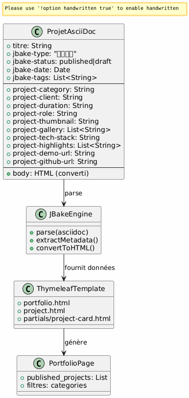
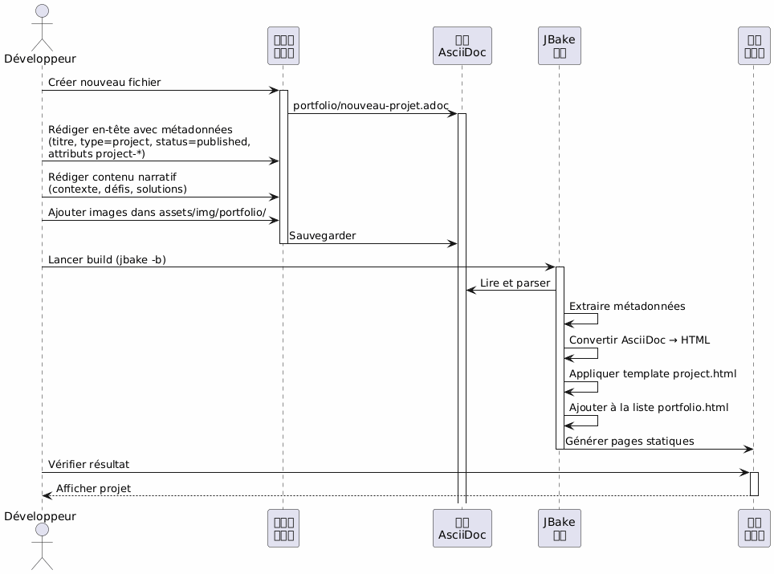
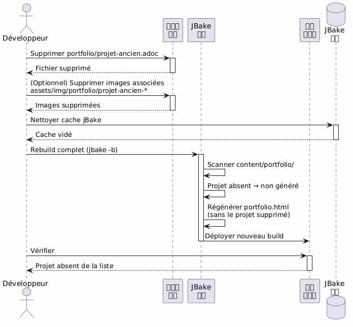
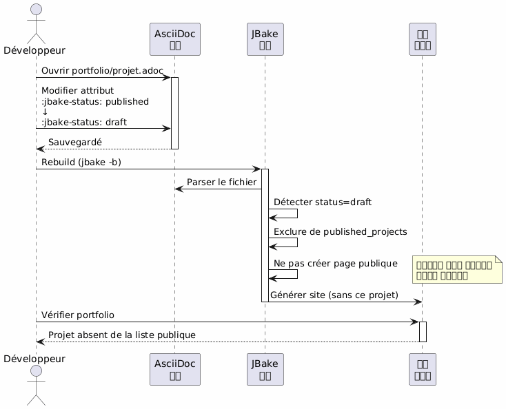
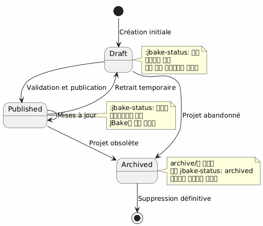
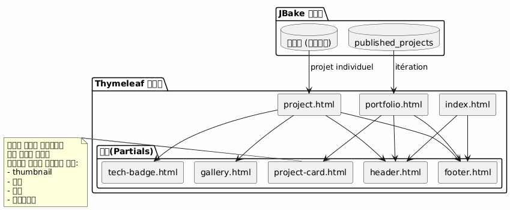
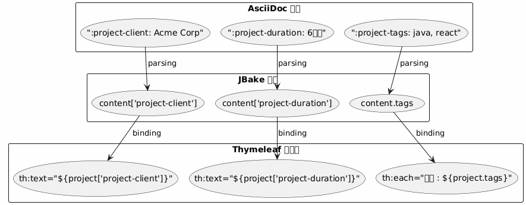
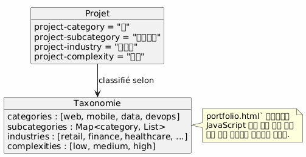

Architecture Portfolio JBake - 비전 및 유스케이스
게시: 15 January 2026
건축 비전
주도 원칙
아키텍처는 관심사의 분리 원리에 기반을 두고 있습니다 :
-
Contenu : 풍부한 메타데이터가 포함된 구조화된 AsciiDoc 파일
-
소개 : 재사용 가능한 Thymeleaf 템플릿
-
데이터 : JBake에 의해 AsciiDoc 속성에서 자동으로 추출된 모델
-
스타일 : Bootstrap 5를 시각적 일관성을 위해
전략적 선택 : 포트폴리오를 위한 AsciiDoc
| 기준 | 장점 |
|---|---|
일관성 |
블로그 글과 같은 형식 |
메타데이터 |
구조화된 및 확장 가능한 속성 ( |
유지보수성 |
간단한 텍스트 편집, Git 버전 관리 가능 |
유연성 |
풍부한 콘텐츠(표, 코드, 이미지)를 포함할 수 있습니다. |
템플릿화 |
JBake은 Thymeleaf용 속성을 자동으로 추출합니다. |
데이터 모델
각 포트폴리오 프로젝트는 다음과 같은 AsciiDoc 문서입니다:
-
헤더 메타데이터 : 구조화된 정보(클라이언트, 기간, 기술 등)
-
문서 본문 : 서술적 설명, 도전 과제, 해결책, 결과
-
s용자 정의 속성 : 접두사가 된`project-*`자동 추출을 위해

상세한 사용 사례
UC1 : 포트폴리오에 항목 추가
정상 흐름

생성할 파일의 템플릿
개발자는 만든다`content/portfolio/nom-projet.adoc`표준화된 구조와 함께 :
-
필수 속성을 모두 갖춘 헤더
-
표준화된 섹션 (컨텍스트, 도전, 솔루션, 결과)
-
일관된 이미지 명명법
검증 포인트
-
필수 속성이 존재합니다 (
jbake-type,jbake-status,project-thumbnail) -
참조된 이미지는 에 존재합니다.
assets/img/portfolio/ -
JBake 빌드가 오류 없이 성공합니다
-
포트폴리오 페이지에 프로젝트가 나타납니다
-
개별 프로젝트 페이지가 올바르게 표시됩니다
UC2 : 포트폴리오에서 항목 삭제
명목 플럭스

대체 전략: 아카이빙
영구적으로 삭제하는 대신, 폴더를 만들 수 있는 가능성`content/portfolio/archive/`:
-
파일을 삭제하는 대신 이동하세요
-
쉽게 복원할 수 있습니다
-
Git 기록을 더 명확하게 유지합니다
리소스 정리
-
고아 이미지 확인`assets/img/portfolio/`
-
다른 프로젝트에 참조되지 않은 이미지 삭제
-
JBake 캐시를 정리하여 유령 참조를 방지하기
UC3 : 비공개(초안)로 설정
명목 흐름

가능한 상태

일반적인 사용 사례
-
작성 중인 프로젝트 : 드래프트로 만들고, 준비가 되면 게시
-
임시 기밀 프로젝트 : 클라이언트 승인 동안 초안으로 전환
-
주요 업데이트 : 초안으로 전환, 수정, 다시 게시
-
A/B testing : 초안으로 복제해서 테스트하고, 가장 좋은 버전 공개
템플릿 아키텍처
재사용 가능한 템플릿 전략

데이터 추출 패턴
JBake은 AsciiDoc 속성을 자동으로 Thymeleaf에서 접근 가능한 속성으로 변환합니다 :

명명 규칙
-
프로젝트 속성 : 접두사`project-*` (ex:
project-client,project-tech-stack) -
파일 : kebab-case (예:`ecommerce-platform.adoc`)
-
Images : 프로젝트 이름 접두사 (예:`ecommerce-platform-thumb.jpg`)
-
Templates : 기능적 이름 (예:`project-card.html`,
tech-badge.html)
출판 워크플로우
개발 파이프라인
환경
| 환경 | 사용 | 수락된 상태 |
|---|---|---|
로컬 |
개발 및 미리보기 |
초안, 게시됨 |
스테이징 |
사전 제작 검증 |
게시된 것만 |
생산 |
공공 사이트 |
단독으로 게시됨 |
확장성
새로운 속성 추가
데이터 모델을 풍부하게 하기 위해, 단순히 새로운 접두사가 붙은 속성을 추가하면 됩니다.project-*[No output]
-
project-awards: 수상 및 인정 -
`project-testimonial`고객 인용
-
`project-team-size`팀 규모
-
project-budget-range: 예산 범위
이러한 속성은 JBake 엔진을 수정하지 않고도 템플릿에서 자동으로 사용할 수 있게 됩니다.
고급 분류

모범 사례
파일 구성
-
파일 하나 = 프로젝트 하나 : 여러 프로젝트를 섞지 않도록 피하다
-
전용 폴더의 이미지 :`assets/img/portfolio/nom-projet/`
-
일관된 명명법 : 검색과 유지보수가 쉬워집니다
-
Versioning Git : 수정된 사항의 완전한 추적
콘텐츠 관리
-
기본 초안 상태 : 준비됐을 때만 게시
-
출판 전 검토 : 품질 및 기밀성 검증
-
완전한 메타데이터 : 모든 관련 필드를 채우세요
-
풍부한 서사 내용 : 메타데이터에만 국한되지 마라
성능
-
이미지 최적화 : 커밋 전 압축
-
필요한 경우 페이지네이션 : 프로젝트가 20개 이상이면
-
Lazy loading : 갤러리 이미지 필요 시 로드
-
브라우저 캐시 : 자산에 대한 적절한 헤더
결론
이 아키텍처는 다음을 허용합니다 :
-
간편함 : 프로젝트 추가 = 텍스트 파일 만들기
-
유연성 : 새로운 속성을 통해 확장 가능
-
유지보수성 : 내용과 표현의 분리
-
추적성 : 완전한 Git 버전 관리
-
Automatisation : 빌드 및 연속적인 배포가 가능
AsciiDoc 선택은 사이트의 나머지와 일관성을 유지하면서 전문 포트폴리오에 필요한 풍부한 메타데이터를 제공한다.
관련 기사
31 May 2026
14 May 2026